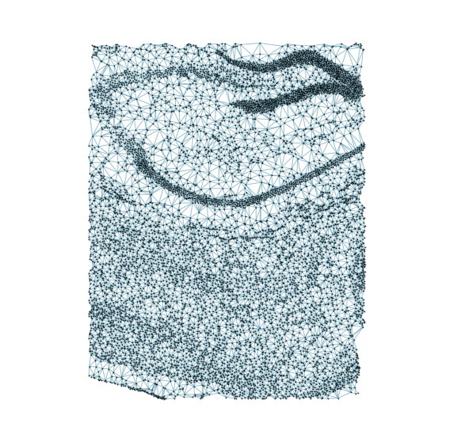
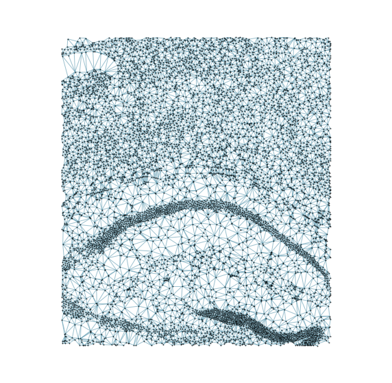
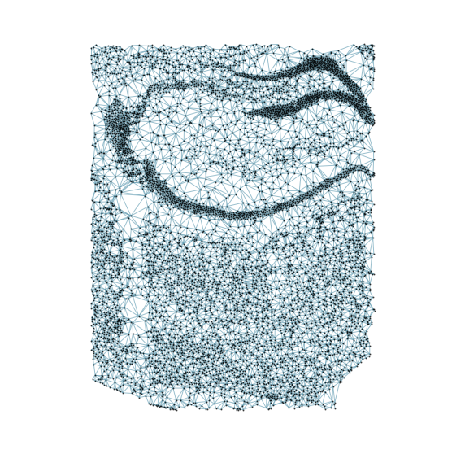
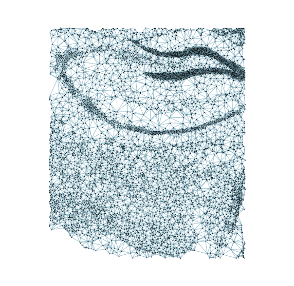
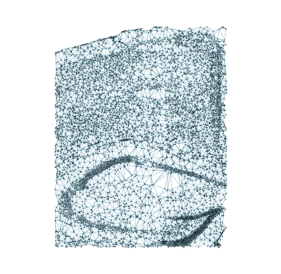
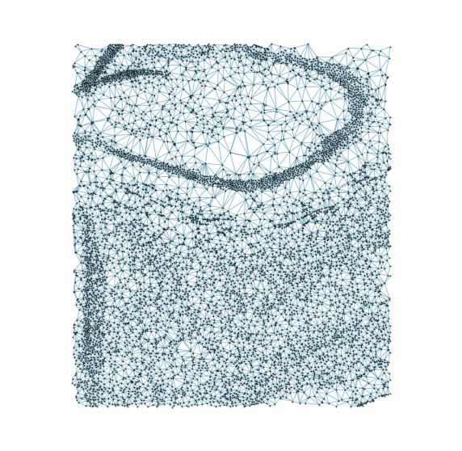
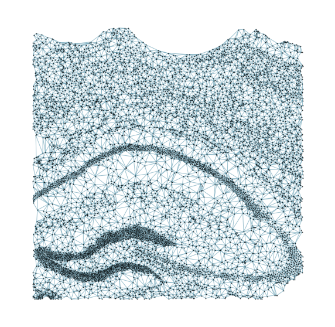
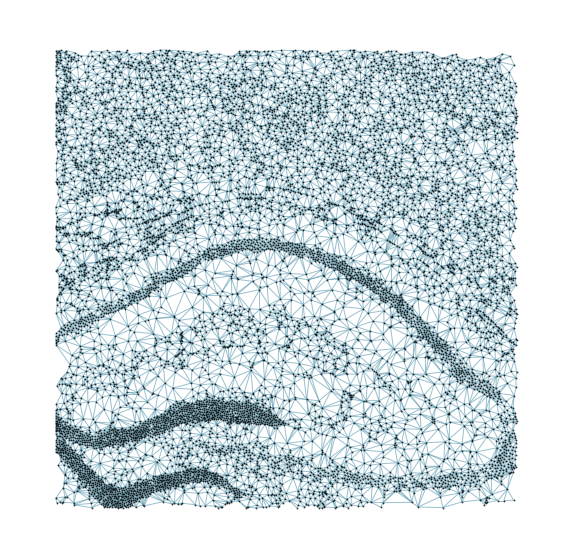
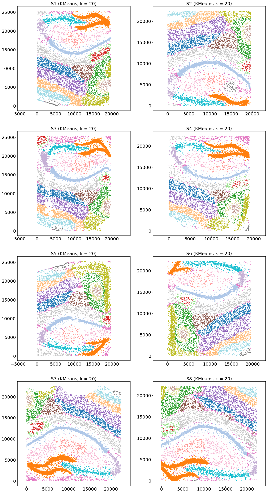

Demo1 CAST Mark captures common spatial features across multiple samples
[1]:
import os
import numpy as np
import anndata as ad
import scanpy as sc
import CAST
import warnings
warnings.filterwarnings("ignore")
work_dir = '$demo_path' #### input the demo path
Using backend: pytorch
Load Data
CAST Mark method only require the following data modalities:
gene expression raw counts
spatial coordinates of the cells
We organize spatial omics data in the AnnData format (We recommend readers to pre-organize data in this format):
adata.Xstores the STARmap gene expression raw countsadata.obscontains important cell-level annotation, including spatial coordinates (column name:'x','y')Data for different experimental samples are combined in a single Anndata object (column name
'sample')
Settings
[2]:
output_path = f'{work_dir}/demo1_CAST_Mark/demo_output'
os.makedirs(output_path, exist_ok=True)
adata = ad.read_h5ad(f'{output_path}/../data/demo1.h5ad')
adata.layers['norm_1e4'] = sc.pp.normalize_total(adata, target_sum=1e4, inplace=False)['X'].toarray() # we use normalized counts for each cell as input gene expression
samples = np.unique(adata.obs['sample']) # used samples in adata
coords_raw = {sample_t: np.array(adata.obs[['x','y']])[adata.obs['sample'] == sample_t] for sample_t in samples}
exp_dict = {sample_t: adata[adata.obs['sample'] == sample_t].layers['norm_1e4'] for sample_t in samples}
Run
[3]:
### Run the model to generate the graph embedding
embed_dict = CAST.CAST_MARK(coords_raw,exp_dict,output_path)
### CPU with single core may takes long time for each epoch. If it takes too long, you could set:
### embed_dict = CAST_MARK(coords_raw,exp_dict,output_path,epoch_t = 20)
Constructing delaunay graphs for 8 samples...
Training on cuda:0...
Loss: -426.349 step time=0.420s: 100%|██████████████████████████████████████████████████████████████████████████████████████████████████| 400/400 [02:48<00:00, 2.38it/s]
Finished.
The embedding, log, model files were saved to /home/unix/ztang/wanglab/tangzefang/03.Projects/05.CCF/06.warp_up_tutorials/01.demo/demo1_CAST_Mark/demo_output








[4]:
### Visualize the embedding with Kmeans clustering
CAST.kmeans_plot_multiple(embed_dict,samples,coords_raw,'demo1',output_path,k=20,dot_size = 10,minibatch=False)
Perform KMeans clustering on 72165 cells...
Plotting the KMeans clustering results...
[4]:
array([14, 16, 14, ..., 8, 8, 12], dtype=int32)
